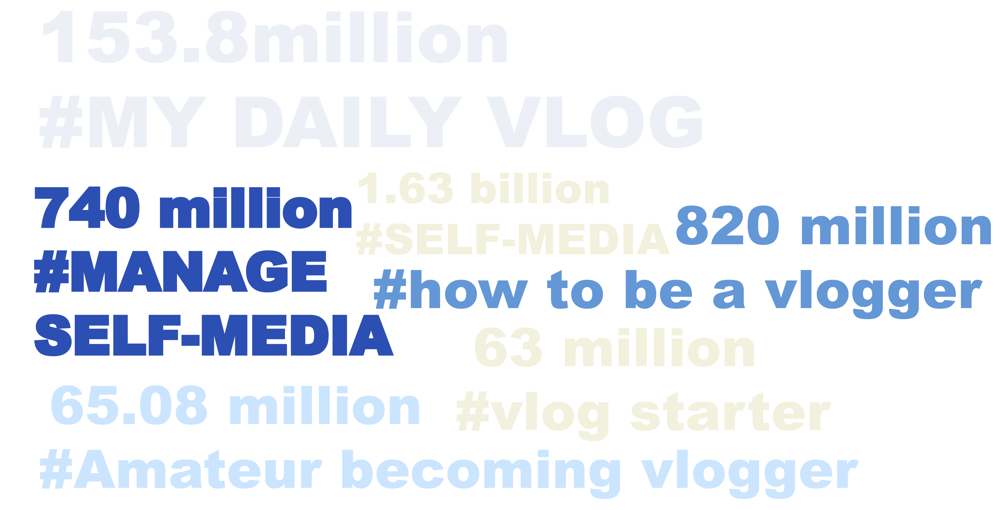

Here, the impact of vlogging is discussed. We explore how vlogs shape public perspectives toward the internet, particularly the monetization of personal information for profit. How is the profit chain established through vlogging? This section also examines the broader influence of vlogging on individuals, vloggers, and platforms, discussing how it alters daily life and its potential impact on digital marketing and social media strategies.
RedBook is one of the most popular social media platforms in China in which users record their lives through short videos, pictures and other forms. On the official website, Redbook notes its daily views are over 10 million times.
70% of the platform users are born after 1990 (qiangushuju).The idea of “self media” is extremely popular on the platform. Hashtags related to “vlogs” have a huge amount of views in total. Why does this phenomenon appear? Self media refers to the way that the general public releases their own lives and news to the Internet and other ways. It is a way for ordinary people to share their own media news as they are connected to digital technology.
The poster above not only shows the large attraction from audiences towards “vlog” and “self-media”. The topic of “normal people becoming vloggers” is widely discussed as well.
The self media is currently in a highly developed stage in China. The more followers vloggers have, the more likely they earn profit through advertising and live streams. The more profit they earn, more ordinary people want to engage in the industry to make money. There are many different ways to start self media. Among all of them, the easiest way is to be a vlogger. People only need to film their vlogs using mobile phones (which in the current era, everyone has). Being a vlogger is almost having no boundaries to start with, no serious requirement at all. However, as we analyzed in the “Trend” page. It is hard for normal people to stand out as there are so many vlogs published on the Internet and the audience is more easily attracted to vloggers who have money or good looks. In this case, many vloggers who already have a good amount of followers as foundations, start to make videos teaching amateur start their own career in vlog. These types of videos are popular, the views amount is around 10,000 times to 100,000 times.
Searching the related topic on the platform, many videos with the following captions show up. The caption almost “bragging” the benefits of being a vlogger, which attracts more people to join the crowded swimming pool.
On the flip side, viewers face certain losses in the vlogging world. A significant issue is the psychological impact of constantly comparing their lives to the often idealized realities presented in vlogs. This comparison can lead to feelings of inadequacy, especially when confronted with vloggers who showcase luxurious lifestyles or unattainable beauty standards. Moreover, there's a risk of misinformation, as not all vlog content is fact-checked or reliable. Lastly, the sheer volume of content can lead to information overload and excessive screen time, potentially affecting mental and physical health.
For viewers, vlogging opens up a world of information and entertainment. They gain access to a diverse range of content, spanning from educational materials to lifestyle vlogs, which can significantly broaden their perspectives. This exposure to different cultures, ideas, and personal stories enhances their understanding and empathy towards various life experiences. Additionally, for those inspired by vloggers, there's the potential of learning new skills or even starting their own vlogging journey. This aspect of vlogging can be particularly empowering, providing viewers with not just passive content consumption but also active participation and community engagement opportunities.
However, vlogging is not without its challenges. One major loss for vloggers is their privacy. As they share their lives online, the distinction between public and private life blurs, often leading to unwanted scrutiny and invasion of privacy. Another significant challenge is the risk of online harassment and negative criticism, which can take a toll on mental health. Additionally, the pressure to consistently produce popular content can lead to burnout, a common issue among content creators.
Vloggers' Gains with a Focus on Advertising and Live Streaming Revenue: Vloggers enjoy considerable gains from their online presence, particularly through lucrative avenues like advertising and live streaming. The financial benefits can be substantial, as successful vloggers attract various advertising deals, ranging from product placements to dedicated promotional videos. These advertisements are often seamlessly integrated into their content, providing a significant source of income.
Live streaming adds another dimension to their earnings. During these streams, vloggers often engage directly with their audience, which can lead to real-time donations or 'super chats', where viewers pay for their messages to be highlighted. This interaction not only boosts income but also strengthens the bond between vloggers and their followers.
On the downside, platforms face unique challenges. One of the primary losses is the responsibility of moderating content to ensure it adheres to community standards and legal requirements. This task is complex and resource-intensive. Furthermore, platforms are often criticized for not doing enough to protect users from harmful content or misinformation. There's also the constant pressure to innovate and adapt to changing user preferences and technological advancements, which requires continuous investment and development efforts.
Digital platforms hosting vlogs gain considerably from this content format. The primary benefit is the increase in user engagement and traffic, which translates into higher advertising revenue. These platforms also become hubs for cultural and social exchange, enhancing their value and appeal to a broader audience. Additionally, successful vloggers can attract partnerships and exclusive content deals, further boosting the platform's profitability and prestige.